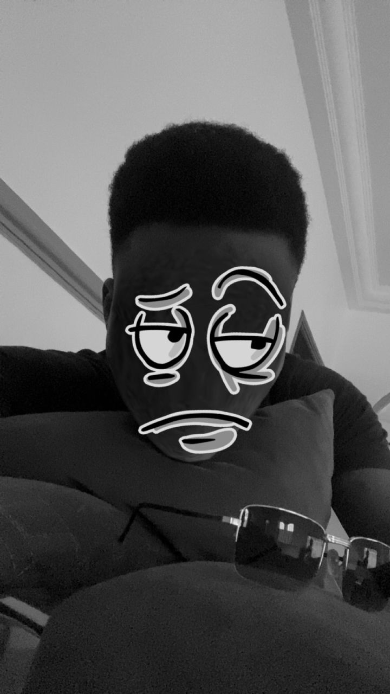

Bienvenue sur mon site WEB
AFANOUVI Joseph Dieudonne

Cliquer pour voir ma Page 2
I - Infos personnelles 🧑
Retour sur la page 2
NOM: AFANOUVI
PRENOM: Joseph Dieudonne
SEXE: Masculin
CONTACT: 229 01 40 53 62 58
MAIL: josephafnvi@gmail.com
II - Mes formations 🎓
CEP (Certificat d'Études Primaires)
BEPC (Brevet d'Études du Premier Cycle)
BAC (Baccalauréat)
Actuellement en Licence 2 en Réseaux, Mobilité, Sécurité (RMS)
III - Mes loisirs 🏀🎶
Basketball
Sport (Fitness et Course à pied)
Musique (Écoute et Découverte)
Danse
Prendre l'air à la **plage**
IV - Situation professionnelle 💻
Compétences et Domaines d'intérêt :
E-commerce
Montage vidéo
Consultant en Facebook ADS
License 2 en Réseaux, Mobilité, Sécurité (RMS)